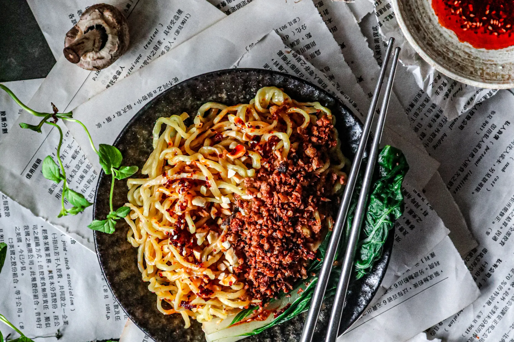

Vegan Dan Dan Noodles
from Chez Jorge

Description
These Taiwanese-style dan dan noodles are the perfect savory, spicy, and comforting
dish to enjoy after a tiring work day as they require minimal ingredients and are quick and
easy to make.
Ingredients
- 360g ramen noodles
- Thinly chopped scallions
Vegan mince
- Vegan crumbled protein of choice
- 1 tsp ginger poweder
- 1 tbsp soy sauce
- 1 tsp mirin
- 2 tsp gochujang
- 1/4 tsp ground five spice
- Neutral vegetable oil for frying
Spicy sauce
- 4 cloves grated garlic
- 4 tbsp rayu (garlic chili oil)
- 4 tbsp soy sauce
- 1 tbsp dark brown sugar
- 1.5 tbsp creamy peanut butter
- 2 tsp black vinegar
Steps
- Prepare the vegan protein crumble of choice. Cook in oil in a non-stick pan
on medium-high heat until moisture evaporates. Add all mince seasonings and stir. Cook until
crispy. Set aside.
- Add all spicy sauce ingredients to a bowl and whisk or stir with a fork to combine
- Cook noodles according to package directions. Strain and reserve the cooking water.
Split noodles between two bowls (or one if you would like!) and top with about 2 tbsp of
warm cooking water, 4-5 tbsp of the spicy sauce, vegan mince to taste, and chopped scallions.
Lightly toss and enjoy immediately.